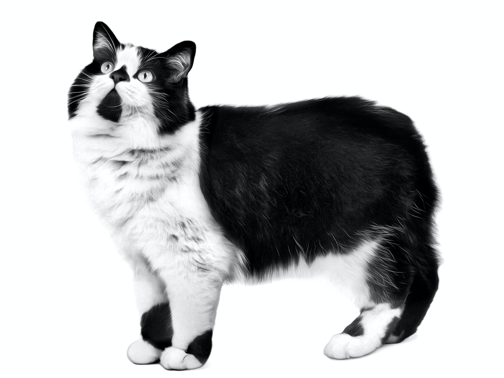

Oriental Shorthair kedilerinin uzun tüylü versiyonu olarak bilinen
Oriental Longhair kedi ırkının karakteri atalarından biri olan Siyam kedilerine benzer.
İlk kez 19. yüzyılda görülmeye başlayan bu kedi ırkı İngiltere kökenlidir.
Keşfedildiği yüzyılda gerçekleşmese de ancak
20. yüzyılın son çeyreğinde Siyam kedilerinden ve akrabası olan
Oriental Shorthair kedilerinden ayrı bir cins olarak kabul edilmişlerdir.
Birçok kuruluşun ödüle layık gördüğü Oriental Longhair kedi cinsi korunarak
en saf kedi ırkları arasına girmeyi başarmıştır.
Kedi severlerin kalbine ise iyi huylu ve sadık olmaları ile giren
Oriental Longhairlar enerjik ve oyuncu yapıları sayesinde
birlikte yaşadıkları tüm canlıları neşelendirme yetenekleri ve
yumuşacık güzel tüyleri ile büyüleyici canlılardır.
Tiffany (Chantilly) Kedisi
Uzun yumuşak tüyleri ve güzelliği ile dünya çapında kedi severlerin dikkatini üzerine toplayan
Tiffany kedisi nam-ı diğer Chantilly,
1969 yılından itibaren ayrı bir kedi ırkı olarak kabul edilerek üretimine başlanması sağlandı.
Bu kedilerin ortaya çıkış tarihi tam olarak
bilinmese de 1960’lı yıllarda adları duyulmuş oldu. İngiliz kökenli olan Tiffany kedilerinin
Burmese ve İran kedilerinin melezlenmesi ile ortaya çıktığı görüşü yaygındır.
Güzelliği ve yumuşacık bir his bırakan tüylerinin yanında iyi huylu olması da tercih sebebi olan
Chantilly kedisi ün kazanmasının ardından kısa bir zaman sonra oldukça popüler hale geldi.
Bu popülaritenin bir diğer sebebi ise katıldığı kedi güzellik yarışmalarından aldığı
derecelerdir.
Cymric Kedisi

Doğal mutasyon sonucunda ortaya çıkmış olan Cymric kedileri köklü bir geçmişe sahiptir.
18. yüzyılda keşfedilen bu kedilerin göze çarpan ilk özelliği kuyruksuz olmalarıdır.
Birleşik Krallık’a bağlı olan Isle of Man adasının anavatanları olduğu sanılan bu kediler,
gemilerle dünyaya yayılmışlardır. Farklı fiziksel özellikleri ve sevimlilikleri sayesinde
dikkat çeken Cymric kedileri, doğdukları adanın adını dünyaya duyurmuşlardır.
1994 yılında diğer ırklardan ayrılarak başlı başına bir kedi cinsi olduğu kabul edilen
bu kedileri farklı yapan sadece kısa kuyrukları değildir.
Cymric kedileri aynı zamanda ağırlık olarak da diğer kedi cinslerinden ayrılırlar.
Yetişkinliklerinde 6 kilogramdan başlayan ağırlıkları nedeniyle
tombul bir vücuda sahiptirler ve çok daha yüksek bir ağırlığa ulaşabilirler.
Karakter özellikleri de adeta bekçi köpeklerine benzer.
Evlerini ve alanlarını koruma altına almak isterler.